Geometria
A Geometria, área de estudo da Matemática, é dividida em: Geometria Plana, Espacial e Analítica. A Geometria realiza cálculos relacionados com a medida de estruturas planas e tridimensionais.
Geometria é uma palavra de origem grega que significa: “geo”, terra, e “metria”, que vem da palavra “métron” e significa medir. Sendo assim, a Geometria é uma ciência que se dedica a estudar as medidas das formas de figuras planas ou espaciais, bem como sobre a posição relativa das figuras no espaço e suas propriedades. Os matemáticos que realizam os estudos relacionados com a Geometria são chamados de geômetras
Ao longo da história da Geometria, que se constituiu como ciência organizada na Grécia Antiga, destacaram-se geômetras como Arquimedes, Descartes, Tales de Mileto, Euclides (considerado o pai da Geometria), entre outros. Divisões da geometria:
- Geometria analítica: relaciona a álgebra e a análise matemática com a geometria;
- Geometria plana: também chamada de Geometria Euclidiana, estuda o plano e o espaço baseando-se nos postulados de Euclides;
- Geometria espacial: realiza o estudo de figuras tridimensionais. Nessa área de estudo, é possível calcular o volume de um sólido geométrico.
Agora mostraremos um resumo de algumas coisas fundamentais que você precisa saber sobre geometria para se dar bem nas provas:
Ponto
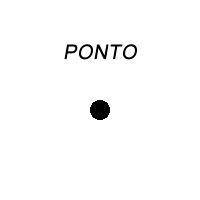O ponto é o único ente geométrico que realmente não pode ser definido. O que sabemos sobre ele são suas características, ou seja, aquilo que podemos perceber e que os axiomas nos garantem:
- É a noção geométrica mais primitiva de todas.
- Não possui dimensão (adimensional) e nem formato.
- Usamos para indicar localização, pois são mais precisos (se fosse um triângulo, por exemplo, não saberíamos em qual parte da figura o local indicado se encontra).
- O ponto é dito como algo que “não tem partes”.
- Ele é literalmente um pontinho, como o ponto final ou quando você faz um ponto com a caneta sobre uma folha.
- É representado por uma letra maiúscula latina.
Reta
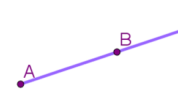Apesar de não existir uma definição sistemática, podemos dizer que uma reta é um conjunto de pontos alinhados, ou seja, não fazem curvas. Outras características que nos ajudam a identificá-la são:
- É preciso, no mínimo, dois pontos para se traçar uma reta.
- Elas são infinitas nas duas direções (nas duas pontas), porque os pontos são infinitos e espalhados “por aí”.
- Uma reta não tem origem ou extremidade.
- Não conseguimos determinar o seu comprimento (é ilimitada).
- Os pontos que a compõe não são coincidentes, ou seja, não estão em um mesmo lugar (uns sobre os outros).
- Por isso, é possível medir a distância entre os pontos ou medir uma parte da reta.
- A reta possui apenas uma dimensão (unidimensional), porque os pontos são adimensionais, então não podemos medir sua altura ou largura. Só podemos medir o seu comprimento (distância).
- Cada reta é indicada por uma letra minúscula latina.
- Podemos dizer que é uma “linha” reta, sem curva.
Quando paramos para analisar partes das retas, podemos falar sobre os segmentos de retas (tem início e fim bem definidos) ou as semirretas (tem início mas segue infinito ao longo da reta). Os segmentos são aqueles que compõem os lados ou arestas das figuras geométricas e são indicados assim: AB. Isso significa que o segmento começa no ponto A da reta e termina no ponto B. As retas podem aparecer em 3 posições: horizontal, vertical ou inclinada.
Plano
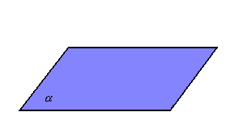Dizemos que o plano é um conjunto de retas alinhadas, coladinhas umas nas outras. Pela consequência da definição da reta, podemos dizer que o plano também é um conjunto de pontos. A área formada por esse alinhamento de retas e pontos é uma superfície plana, então chamada de Plano. Outras características são:
- O plano é uma superfície reta, não faz curva.
- O plano é bidimensional (podemos medir sua altura e largura, como uma folha de papel).
- É possível desenhar figuras sobre o plano.
- Um plano pode ser formado por 3 pontos não colineares (imagine um triângulo, ele é uma região plana com 3 vértices).
- Também pode ser formado por 1 reta mais um ponto fora dela.
- É representado por letras gregas minúsculas, como α, β, etc.
- Um plano pode ser formado por duas retas concorrentes ou paralelas distintas.
Alguns matemáticos, como Descartes, fizeram o esquema de planos com elementos destacados. Estamos falando daquele que tem 2 retas em sentidos diferentes e alguns de seus pontos são representados por números, chamado de Plano Cartesiano.
Ângulo
O ângulo é uma região delimitada por duas semirretas. Para medi-lo, há duas possíveis unidades: grau ou radiano. De acordo com a sua medida, ele pode ser classificado em agudo, reto, obtuso ou raso. Quando temos dois ângulos, podemos estabelecer relações entre eles. Caso eles possuam a mesma medida, eles são chamados de congruentes. Quando a soma entre eles é igual a 90º ou 180º ou 360º, eles são conhecidos, respectivamente, como ângulos complementares, suplementares e replementares.
Como medir um ângulo
Para a realização de um desenho ou para a medição de um ângulo, na geometria plana utilizamos o compasso e o transferidor. Existem alguns outros instrumentos utilizados por profissionais da construção civil, como o teodolito. Como o ângulo corresponde à região que está entre duas semirretas, para realizar a medida em um transferidor, posicionamos uma das semirretas apontando para 0º e observamos o grau para o qual a outra semirreta está apontada.
Unidade de medida de ângulos
Existem duas possibilidades para medirmos um ângulo: o grau e o radiano. 1 rad é o ângulo que faz com que o arco formado na circunferência tenha a mesma medida que o raio dessa circunferência. É bastante comum a necessidade de converter graus para radianos. Para isso, utilizamos regra de três, sabendo sempre que 180º corresponde a π.
Exemplo: - Qual é o valor de um ângulo de 60º em radianos?
π rad -- 180° | x rad -- 60° ⇒ x = 60π/180 ⇒ x = π/3 rad
Classificação dos ângulos
- Ângulo agudo: quando sua medida é um número maior que 0 e menor que 90º 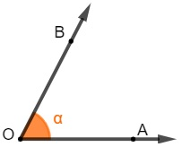
- Ângulo reto: possui exatamente 90º. Quando isso acontece, podemos dizer também que as semirretas se cruzam de forma perpendicular. 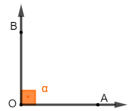
- Ângulo obtuso: quando sua medida é maior que 90º e menor que 180º. 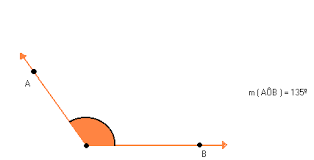
- Ângulo raso: conhecido também como meia-volta ou meia-lua, esse ângulo equivale à metade de um ângulo inteiro, logo possui exatamente 180º. 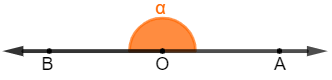
- Ângulo côncavo: menos comum nas situações cotidianas que os demais, é o ângulo que tem medida maior que 180º e menor que 360º. 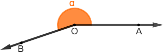
- Ângulo inteiro: como o nome sugere, esse ângulo representa a volta completa, possuindo exatamente 360º. 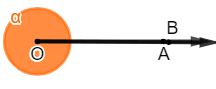
Triângulo
Triângulos são polígonos formados por três lados e três ângulos. Em termos geométricos, os triângulos são o resultado da junção entre três pontos não colineares (A,B e C). Os tipos de triângulos variam de acordo com o comprimento dos lados e dos ângulos internos formados pelos vértices,e a soma de seus ângulos internos é 180°.
Classificação dos triângulos
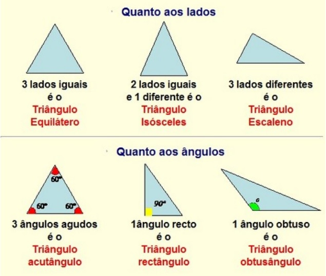Área do triângulo
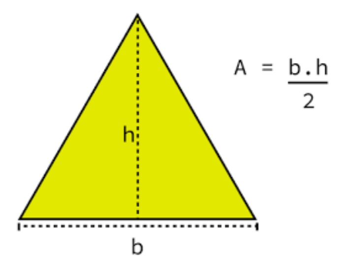 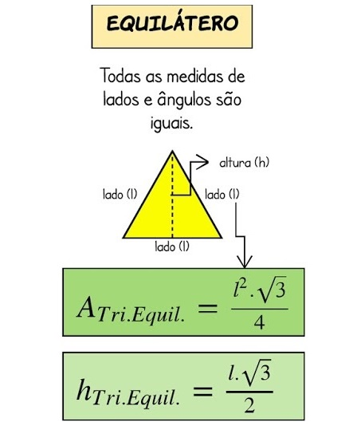Teorema de Pitágoras
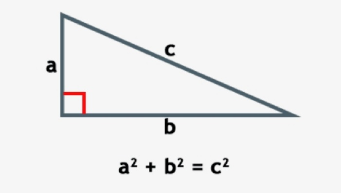Lei dos senos
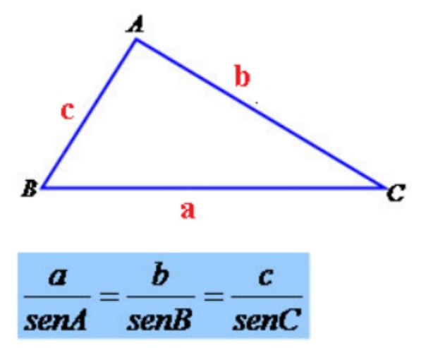Lei dos cossenos

Prisma
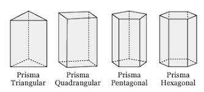O prisma é um sólido geométrico estudado na geometria espacial. Ele possui duas bases paralelas e formadas por polígonos, e as suas faces laterais são sempre paralelogramos. O prisma recebe um nome de acordo com o formato da sua base. Se a base for um pentágono, por exemplo, ele será um prisma de base pentagonal. Existem duas classificações possíveis para o prisma, que é o prisma reto, quando ele possui arestas laterais perpendiculares à base, e o prisma oblíquo, quando a aresta lateral não é perpendicular à base. Para calcular a área total e o volume de um prisma utilizamos fórmulas específicas
Pirâmide
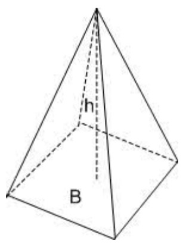- Base: corresponde à região plana poligonal na qual se sustenta a pirâmide
- Altura: designa a distância do vértice da pirâmide ao plano da base.
- Arestas: são classificadas em arestas da base, ou seja, todos os lados do polígono da base, e arestas laterais, segmentos formados pela distância do vértice da pirâmide até sua base
- Apótemas: corresponde à altura de cada face lateral; são classificadas em apótema da base e apótema da pirâmide.
- Superfície Lateral: É a superfície poliédrica composta por todas as faces laterais da pirâmide.
Área da pirâmide
Para calcular a área total da pirâmide, utiliza-se a seguinte fórmula: Área total: Al + Ab; onde Al: Área lateral (soma das áreas de todas as faces laterais) e Ab: Área da base
Volume da pirâmide
Para calcular o volume da pirâmide, tem-se a expressão: V = (Ab*h)/3; onde: Ab:Área da base e h: altura